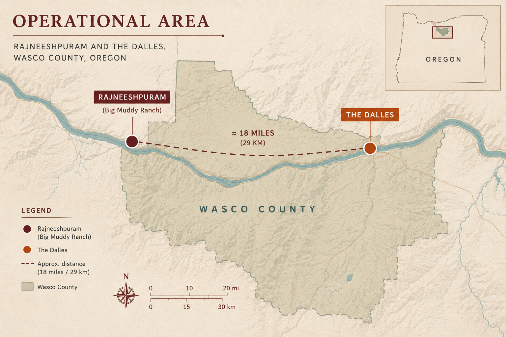

CASE FILE — United States v. Ma Anand Sheela et al.
A Forensic Psychology Case Portfolio
The Salad Bar Conspiracy: Rajneeshpuram and the First Bioterror Attack on U.S. Soil
In 1984, over 750 residents of The Dalles, Oregon fell ill after commune leaders deliberately contaminated local salad bars with salmonella as an attempt to suppress voter turnout ahead of a county election. This portfolio reconstructs the psychology behind the plot: how deception and premeditation were organized within the commune's leadership, and how investigators pieced together the forensic evidence that ultimately identified the perpetrators.
CASE STATUS
CLOSED
PRIMARY SUBJECT
Ma Anand Sheela
OFFENCE TYPE
Bioterrorism
LOCATION
The Dalles, Oregon
YEAR
1984
EX-01
0
People sickened
EX-02
0
Hospitalised
EX-03
0
Restaurants targeted
EX-04
0
Deaths
EX-05
1st
Bioterror attack, US history
01
Background of the Case
In 1981, the disciples of Indian guru Bhagwan Shree Rajneesh (later known as Osho) founded the intentional community of Rajneeshpuram on a 64,000-acre ranch located in rural Wasco County in Oregon. The commune was run by the personal secretary of Rajneesh named Ma Anand Sheela. The members of the commune increased to around 2,500 and constantly feuded with the Oregon locals.
By 1984, commune leadership faced the prospect of losing political control of the county. To secure two contested seats on the Wasco County Circuit Court, the group first attempted to flood the electoral rolls with thousands of homeless recruits bused in through the "Share-A-Home" programme. When officials moved to block same-day voter registration, Sheela's inner circle escalated: rather than abandon the effort to suppress the opposing vote, they began planning to incapacitate it directly.
That decision culminated in the 1984 Rajneeshee bioterror attack a deliberate, multi-stage plan to contaminate the food and water supply of The Dalles with cultured Salmonella bacteria. What follows is an examination of the reasoning, planning, and psychology within Sheela's circle that made that escalation possible and the forensic work that ultimately traced it back to them.

Figure 1. Rajneeshpuram (Big Muddy Ranch) and The Dalles,
Wasco County, Oregon.
Case at a glance
Principal architects: Ma Anand Sheela (Rajneesh's chief lieutenant) and Ma Anand Puja (nurse practitioner, Rajneesh Medical Corporation)
Agent used: Salmonella enterica serotype Typhimurium, purchased legally from a Seattle medical supply company
Motive: Suppress voter turnout to swing the 1984 Wasco County election
Outcome: Rajneeshee candidates lost the election regardless; case unsolved for a year until Sheela's 1985 flight from the commune
02
The Plot: A Timeline of Premeditation
The sequence below matters for the provocation/premeditation analysis in Section 4 — note the deliberate progression from covert testing to full deployment.
1981
🏠 Rajneeshpuram Founded
Commune established at Big Muddy Ranch; tensions with Wasco County begin almost immediately over land use and incorporation.
Jul – Oct 1984
"🚌 Share-A-Home Programme" programme
Roughly 3,000 homeless individuals bused to the ranch and registered to vote, in an attempt to win the county election through numbers rather than force.
29 Aug 1984
🧪 First Covert Test
Two visiting Wasco County commissioners are given water glasses laced with Salmonella. Both fall ill; one is hospitalised. A controlled, low-visibility trial of the method.
Sept 1984
⚠ Failed Dispersal Attempt
Members spread bacteria on grocery produce, doorknobs, and courthouse urinal handles. No measurable outbreak results — the method is refined rather than abandoned.
Sept – Oct 1984
☣ Salad Bar Attacks
Ten restaurants in The Dalles are deliberately contaminated using a brown Salmonella culture the perpetrators called "salsa." 751 people fall ill; 45 are hospitalised.
Nov 1984
🗳 Election Proceeds
Turnout suppression is insufficient — Rajneeshee-backed candidates lose. The attack's motive goes undetected for another year.
Sept 1985
✈ Sheela Flees the U.S.
Internal discord prompts Sheela and senior lieutenants to leave the country. Osho publicly accuses them of a range of crimes and invites investigators onto the commune.
Oct 1985
🚔 FBI Raid & Laboratory Discovery
Investigators uncover a clandestine laboratory containing Salmonella cultures, an invoice for Salmonella typhi, and evidence of a separate plot against U.S. Attorney Charles Turner.
1986
⚖ Guilty Pleas
Sheela and Puja plead guilty to charges including attempted murder and product tampering; each serves 29 months before parole.
03
Psychological Profiles
SUBJECT PROFILE Ma Anand Sheela
SUBJECT-01
Ma Anand Sheela
Personal secretary to Rajneesh · commune administrator
Status:Convicted
Role:Leader
Risk:High
Organised offenderHigh control needInstrumental aggressionManipulative influence styleAuthoritarian leadership
Offence style: Sheela's role in the attack maps closely onto what profiling literature calls the organised offender — methodical planning, controlled testing before full deployment, and a clear instrumental goal (electoral advantage) rather than impulsive or expressive violence. This distinguishes the case from disorganised, emotionally-driven offending.
Authority and manipulation: Multiple commune members testified that Sheela selectively edited recordings of Rajneesh and framed questions to him narrowly, so that his general answers could later be presented as authorisation for actions he had not specifically approved. Her own husband described this as a deliberate technique for manufacturing consent after the fact.
Command structure: Sheela operated at the centre of a tightly compartmentalised cell — roughly a dozen people were involved across planning, laboratory production, and dispersal, with several participants reportedly unaware of the full objective of their work. This compartmentalisation is itself a psychologically and forensically significant feature: it limited what any single defector could disclose.
Contested attribution: A 1994 study noted that most followers believed Rajneesh had not personally directed the poisoning, seeing it instead as Sheela's independent initiative — an important caution against assuming a charismatic leader's authority automatically extends to operational criminal control.
Case Note
Ma Anand Sheela has remained a public figure through interviews,
documentaries and public appearances.
04
Provocation vs. Premeditation
A core forensic psychology distinction: was this a reactive act triggered by provocation, or a planned, goal-directed act of premeditated violence? Click either column to weigh it.
Against "provocation" 0
No single triggering event immediately preceded the attack — grievances over land use had existed for years without escalating to poisoning
The response (mass biological attack) is wildly disproportionate to any specific provocation on record
No evidence of an affect-driven, in-the-moment decision by Sheela or Puja
vs.
Evidence for premeditation 0
Bacteria were purchased through legitimate commercial channels and cultured over time in a dedicated facility
A documented "trial run" phase (produce, doorknobs, water glasses) preceded the full-scale attack
An invoice for Salmonella typhi shows planning for an even more dangerous agent
The attack was explicitly tied to a calculated electoral objective, not an emotional response
A separate, related conspiracy to assassinate a federal prosecutor shows an established pattern of instrumental violence
Assessment: The evidentiary pattern — incremental testing, legitimate procurement, compartmentalised roles, and a stable strategic motive sustained over months — is textbook premeditation, not provocation. This matters practically: it is the difference between a mitigated and an aggravated charge in most criminal justice systems, and it shaped the eventual attempted-murder charges against Sheela and Puja.
05
Deception Techniques
EX-02
Manufactured authorisation
Sheela reportedly asked Rajneesh broad, vague questions and later presented his general answers as specific approval for the plot — a manipulation of ambiguous authority rather than an outright lie.
EX-03
Incremental, low-visibility testing
Before the salad bar attacks, the group ran deniable "trial runs" (contaminated water, produce, doorknobs) that could plausibly be dismissed as coincidence if noticed — classic behavioural piloting before a high-stakes act.
EX-04
Misdirection toward an innocent cause
Public health officials initially attributed the outbreak to poor restaurant hygiene. The absence of any claim of responsibility, combined with a plausible alternative explanation, delayed criminal investigation for roughly a year.
06
Investigative Techniques
01
Epidemiological case linkage
CDC and Oregon Health Division traced hundreds of illness reports back to a common set of restaurants, establishing the outbreak's shape before its cause was known.
02
Microbiological matching
Investigators matched the antibiogram, biochemical markers, and plasmid profile of bacteria found in the commune laboratory to the strain recovered from patients — the piece of physical evidence that closed the case.
03
Cooperating witness testimony
Rajneeshpuram's mayor, David Berry Knapp, turned state's evidence and described Sheela's planning directly to the FBI, corroborating the physical evidence with insider testimony.
04
Documentary evidence
A dated supply invoice for Salmonella typhi and internal lab notes gave investigators a paper trail establishing intent and timeline, independent of witness memory.
07
Literature Review (2016 – 2026)
Two empirical/review sources on the evolving role of forensic psychology, plus one applied source specific to this case.
PEER-REVIEWED ARTICLE
Eze SM, Alabi KJ, Ibrahim SO, Yusuf AO, Hamzat FO, Abdulrauf A, et al. (2025). Forensic Psychology and Criminal Profiling. Journal of Forensic Science and Research, 9(1), 92–96.
Criminal profiling: a valuable adjunct, not a standalone tool
Using qualitative analysis of documented high-profile cases, this review finds that profiling adds genuine investigative value when combined with traditional techniques and physical evidence, but that it remains vulnerable to subjectivity and stereotyping when used alone. The authors trace profiling's roots to early figures like Thomas Bond and the FBI's Behavioral Science Unit, and distinguish deductive, inductive, and geographic profiling as distinct methodologies with different evidentiary strength.
Hanafy S. (2025). The Role of Forensic Psychology in Understanding Criminal Behavior and Legal Decision Making. Journal of Forensic Psychology, 10:388.
An expanding, dual-system role
This review frames forensic psychology as a critical intersection of psychology and law that has expanded well beyond profiling into competency evaluation, offender assessment, risk prediction, and policy contributions. It stresses that forensic psychologists now inform decisions across both criminal proceedings (sentencing, insanity determinations) and civil matters (custody, capacity), improving accuracy and fairness in judicial decision-making.
Turner MD, Marinconz K, Shimp G. (2025). The 1984 Rajneeshee Bioterrorism Attack: An Example of Biological Warfare by Violent Non-state Actors. Cureus, 17(7), e88514.
Applied source: the case itself, peer-reviewed
This peer-reviewed case analysis situates the Rajneeshpuram attack within the broader history of biological warfare, arguing that it demonstrates how low-cost, low-technology methods let small, highly motivated non-state groups cause mass harm without specialised equipment. It corroborates the case facts used throughout this portfolio and offers a public-health-security lens to pair with the psychological one.
Applied case studyBioterrorismNon-state violence
Integration: Connecting the Case to the Research
The Rajneeshpuram case is a useful stress-test for the literature reviewed above. Eze et al. (2025) caution that criminal profiling is not a standalone solution — and this case proves the point directly: no offender profile identified Sheela or Puja. The case was solved through epidemiological case linkage, microbiological matching, documentary evidence, and cooperating witness testimony — the "traditional investigative techniques" the review says profiling must be integrated with, not replace.
Hanafy's (2025) broader claim, that forensic psychology's role has expanded well past profiling into assessment, decision-making, and policy, also shows up in this case's aftermath — expert psychological accounts of Sheela's manipulative influence style and the commune's authoritarian structure shaped later understanding of the case, even though psychology was not part of the original investigation. That distinction matters for practice: forensic psychology's evidentiary contribution here was retrospective (explaining the offender's behaviour) rather than investigative (identifying the offender), which is a more realistic picture of the field's civil and criminal justice role than popular "profiler catches the criminal" narratives suggest.
Together, the case and the literature point to the same conclusion: forensic psychology's genuine value lies less in solving cases through profiling alone, and more in interpreting motive, authority structures, and deception once physical and testimonial evidence has already done the work of identification.
09
References
Eze, S. M., Alabi, K. J., Ibrahim, S. O., Yusuf, A. O., Hamzat, F. O., Abdulrauf, A., Atoyebi, A. T., Lawal, I. A., Ibrahim, O. A., Imam-Fulani, A. Y., & Dare, B. J. (2025). Forensic psychology and criminal profiling. Journal of Forensic Science and Research, 9(1), 92–96. https://doi.org/10.29328/journal.jfsr.1001085
Hanafy, S. (2025). The role of forensic psychology in understanding criminal behavior and legal decision making. Journal of Forensic Psychology, 10, 388. https://doi.org/10.35248/2475-319X.25.10.388
Turner, M. D., Marinconz, K., & Shimp, G. (2025). The 1984 Rajneeshee bioterrorism attack: An example of biological warfare by violent non-state actors. Cureus, 17(7), e88514. https://doi.org/10.7759/cureus.88514
Wikipedia contributors. (2026). 1984 Rajneeshee bioterror attack. Wikipedia, The Free Encyclopedia. https://en.wikipedia.org/wiki/1984_Rajneeshee_bioterror_attack